FAMILY STUFF
|
Hystorical notes: something about my grand-parents. |
Marriage: history of the Tino & Miky quest. |
|
Holidays: some place we visited. |
Friends |
HISTORYCAL NOTES:
The father of my father (Mario Manzato) was born in Rovigo (PD) on 1919 and was one of the poor “Alpini” of the Julia division who went to the Russian Campaign during the WWII. He was one of the very few who come back alive. He moved with his wife (Fernanda Guerrieri, born in Teramo on 1923?) in Fossalon di Grado (GO) to reclaim this land and, after that, he worked as farm hand. They had 4 children, but one died very young. My father (Luciano Manzato, born in Teramo on 1944) was the older, followed by Gianfranco and Loredana.
The father of my mother (Giacomo Gregoris) was born in Isola Morosini (Fiumicello) on 1920. His wife (Giovanna Zuliani, born in Grado on 1923) and they lived in Grado, managing a greengrocer's shop. My mother (Nadia Gregoris, born in Grado on 1944) was the first children, followed by Piero and Gabriele. She studied letter and philosophy at the Trieste University and after that became a teacher. My father and my mother get married in 1966 and had two children: me in 1968 and my sister Giovanna in 1980.
I spent the first years of my life in Cervignano del Friuli, but after my family moved to Grado, where I have done my first 8 years of primary school. I did the secondary school in the same school where my father was teaching, i.e. the Malignani technical institute of Cervignano del Friuli. After the first two years I moved to the head Malignani school in Udine, where I became an electronic technician. After that I moved to Padua University to study physics. In Padua I lived in the Jesuit Antonianum College, where I met many friends (even if many of them where engineers -sigh). I finished my university studies doing a thesis in Cosmology with prof. Sabino Matarrese and Lauro Moscardini.
|
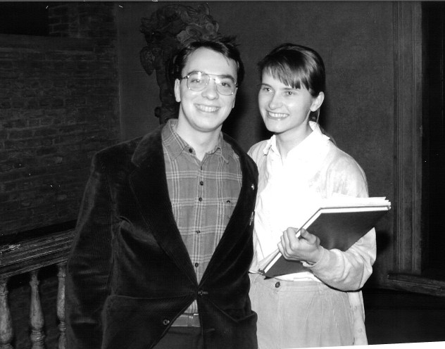 The graduation day (23/02/1994) at Palazzo del Bo (Padova). |
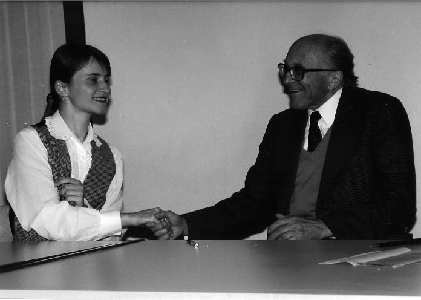 The writer Boris Pahor make his public compliments to Miky for her thesis on his novels. |
MARRIAGE:
I met Mihaela Kavcic on 14 September 1991 in Rome. I was studying physics at the Padua University. Instead she was studying slovenian and french letters in Ljubljana (SLO), living with her parents in Logatec. She graduated with a thesis on the french poet Alfred de Lamartine and on the slovenian writer Boris Pahor. We get married on 26 October 1996.
|
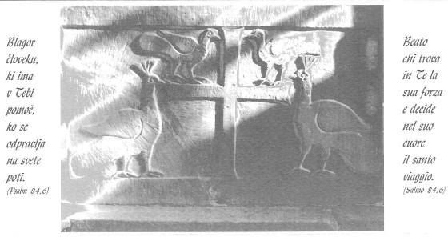 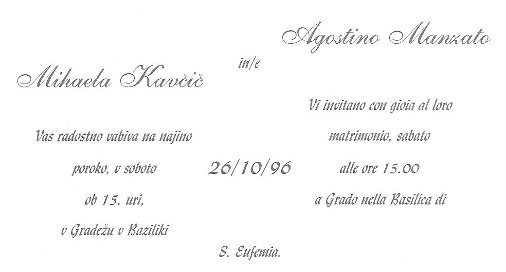 This is the invitation card announcing our marriage. |
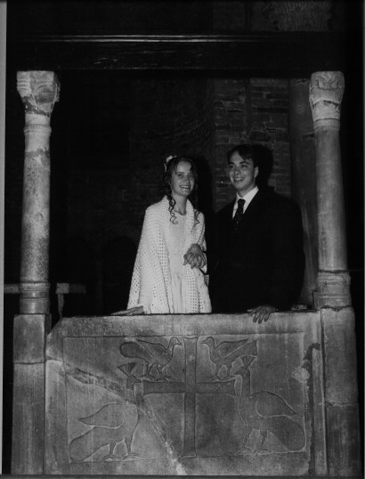 Just married! |
Miky likes hiking mountains and swimming in the sea but what she prefers is reading books. She works as a librarian and she is specialized on children's books (that is why she goes so often to the Bologna International Children Fair). During her free time (?) she translates her preferred italian author in slovenian. She has already published the slovenian translation of p. Silvano Fausti S.J. commentary of “St. Marc Gospel” and now is working on the St. Matthew Gospel.
|
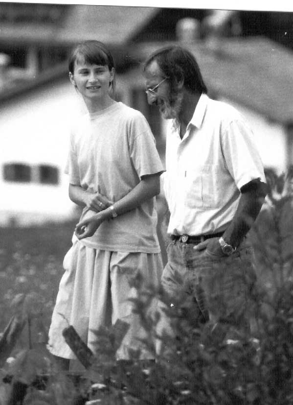 A very young Miky speaking with p. Silvano Fausti S.J. in Selva di Val Gardena (1992 Tino's copyright) |
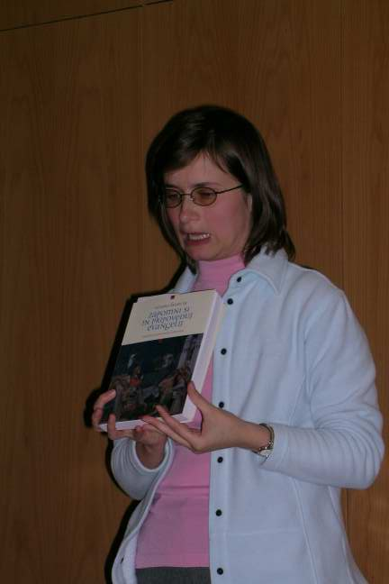 Miky presents the slovenian version of the Fausti Gospel of St. Marc commentary (2006) |
SOME PLACE VISITED:
|
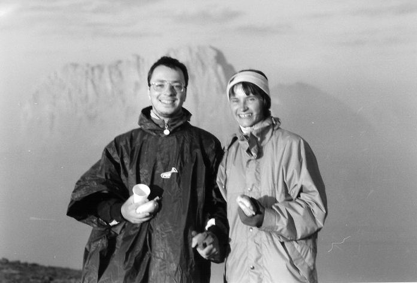 The place where Silvano brought us for a dawn (Dolomiti). |
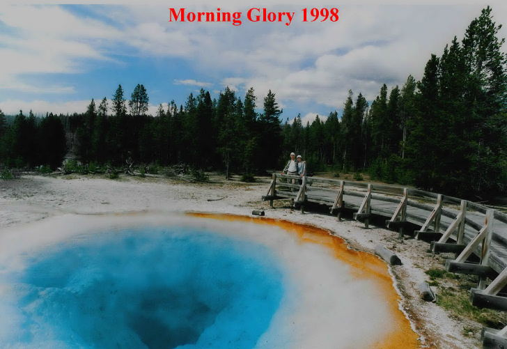 Yellowstone National Park 1998 (picture made by Fulvio Stel) |
|---|---|
|
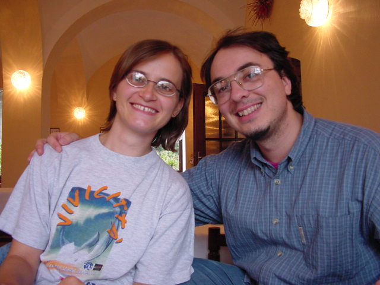 Miky & Tino in Prague 2002 (copyright from Vickie Doswell) |
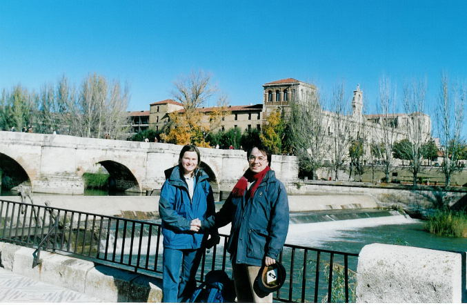 Leon. sul camino de Santiago 2004 |
|
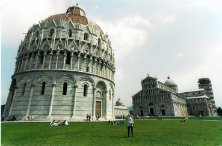 Miky in the Campo dei Miracoli (Pisa) 2003 |
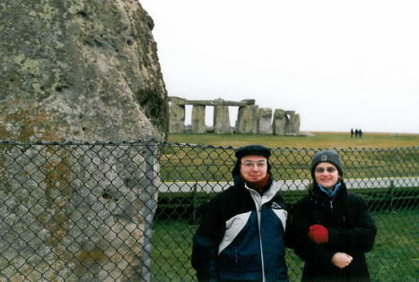 Miky and Tino at Stonehenge 2005 (picture made by Terence Meaden) |
|
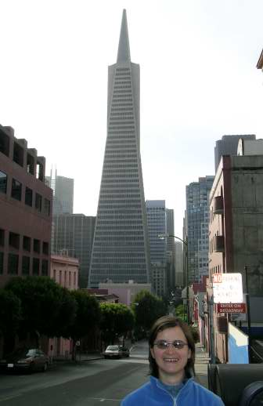 San Francisco 2006 |
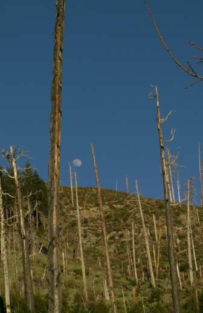 Yosemite National Park 2006 |
|
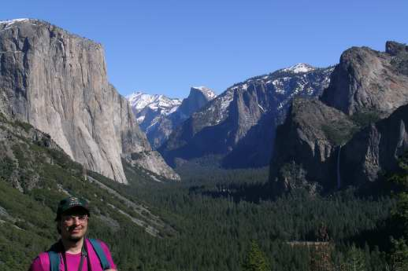 Yosemite National Park |
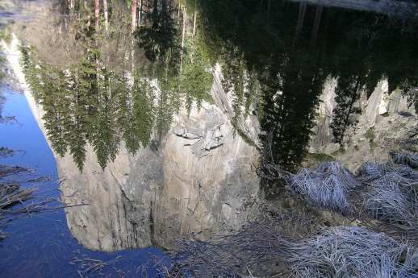 El Captain |
SOME FRIENDS:
|
|
|
|---|---|
|
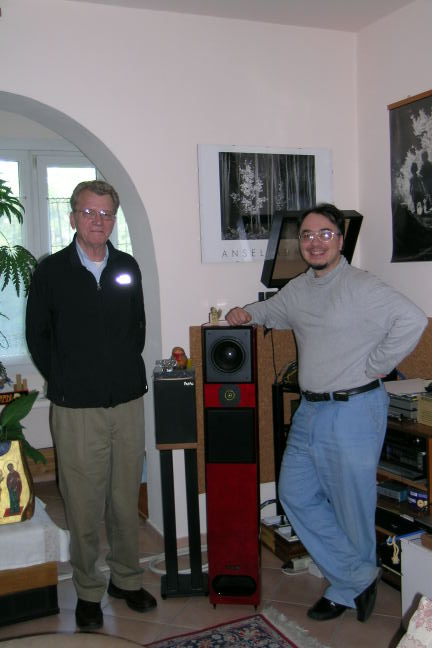 With Griffith Morgan Jr. May 2007 |
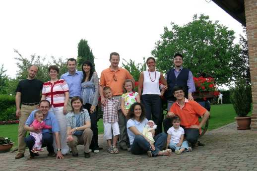 With some fried from the Antonianum college and their families |
|
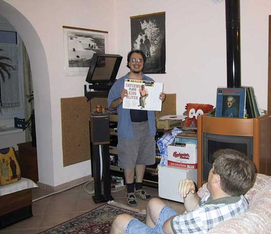 With Harold Brooks, July 2005 |
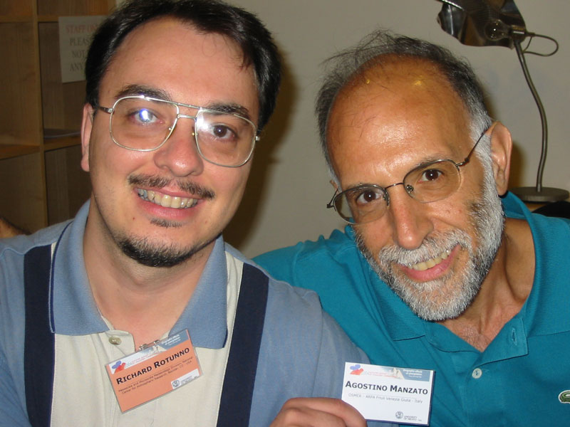 Who is who? June 2004 |
|
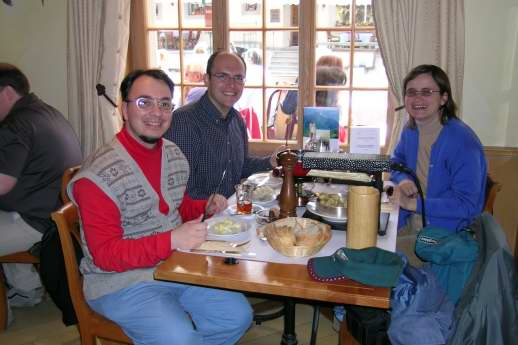 With Luciano Sbaiz in Gruyere May 2006 |
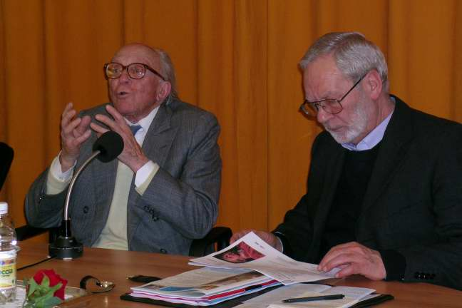 The slovenian novelist Boris Pahor with our friend p. Mario Vit S.J. during a conference in the Centro Veritas (Trieste) 2006 |
|
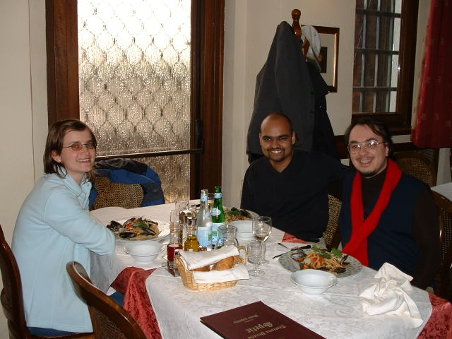 With Sukanta Basu in Trieste 2004 |
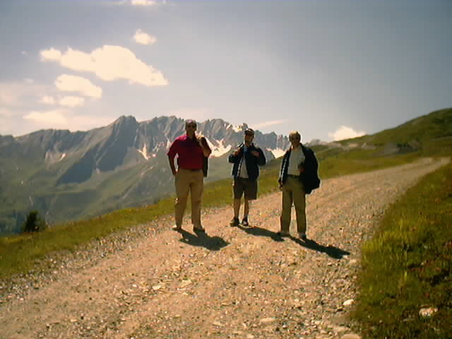 With Vinicio Pelino and Jacques Testud (picture made Sukanta Basu) in Val D'Aosta (St. Oyen Summer School) 2002 |
|
|
|
Tino © August 2007